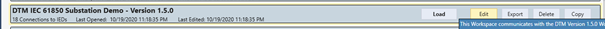
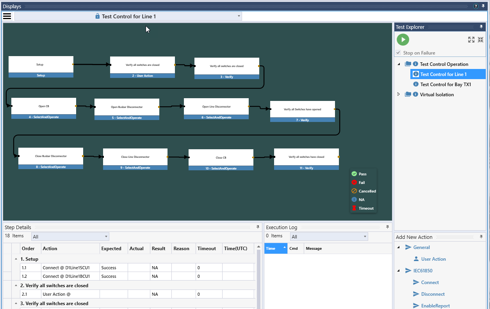
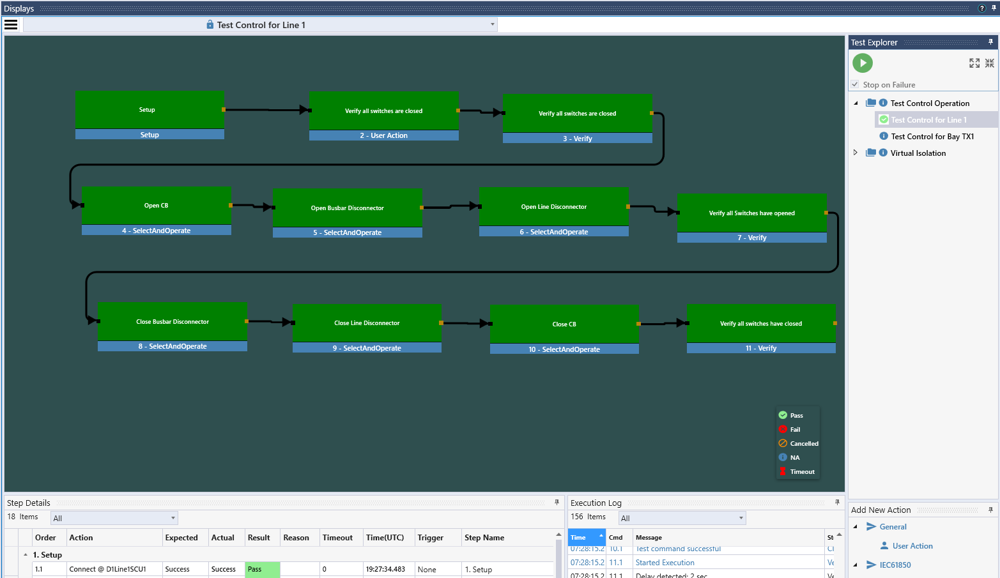

TSP with DTM 61850 substation Demo
1 The DTM IEC 61850 Substation Demo
It is important that the version of the Substation Demo workspace loaded into DTM has the same SCL file as the Test Suite Pro Workspace, so please update DTM if the release version is less than 1.5.0.4549 and update Test Suite Pro if the DTM release is greater than 1.5.1.0.
The DTM IEC 61850 Substation Demo is a simulation of the high voltage part of a substation with two lines and two transformer bays connecting to a single busbar. In each bay, we have a protection device (LPU/TFPU), a bay control unit (BCU), a switch control unit (SCU) and a merging unit (MU).
The bay control unit implements the control of the switches and the measurements; the switch control unit implements the interface to the switches and the merging unit the interface to the current and voltage transformers. The protection devices implement protection functions including breaker failure protection. The line protection additionally implements reclosing and synchro check function.
Information exchange between the IEDs is using GOOSE.
2 Open the Substation Demo Workspace in TSP
Go to “File”, Select the workspace “DTM IEC 61850 Substation Demo”

Select “Edit” and verify the GOOSE adaptor is configured correctly.

Then save the changes and load the workspace.

Now, the workspace will load, TSP will connect to the servers simulated in DTM and perform some initial tests. After a while, in the Tool selection area on the left, all the checkboxes should be green and indicate that everything is correct. In the custom display to the right, you should see the status of the single line – all switches are closed.

3 Use Custom Display to Control Switches
In the custom display, select “Line 1”.

The zoom level can be adjusted by pressing the control key and rolling the mouse wheel. By clicking on “Open”, you can open the circuit breaker.

You will notice that the operation counter (OpCnt) will increase. After opening, you will as well notice an Event for OpOpn. OpOpn is the signal that is sent with a GOOSE message from the CSWI (in the BCU) to the XCBR (in the SCU) to open the breaker.
If you right click on the tile with the DO OpOpn, you can see the event history – each entry corresponds to a GOOSE message with a new state – and you can reset the event history.
4 Use test sequencer to test all the switches
Instead of manually testing all the switches, you can use test sequencer to automate that task. Go to the display “Test Sequencer”. There, multiple test plans and tests have been prepared. The test plan “Test Control Operation” includes one test to test all the switches of line 1, the other to test all the switches of the bay TX1. On the top right, you can see the test plan and select the tests you want to run. On the left part, the tests are configured; the graphic shows an overview. Note you can zoom in and out the graphic with the wheel of your mouse.

Select the test plan “Test Control Operation” and Push on the green play button to start the test. First the test for Line 1 will be executed, then the test for bay TX1. You can observe the progress of the test in the display. At the end, the success is indicated with green color. Note that all switches should be closed before you start the test.

5 Analyze Protection and Control Schemes with Signal Flow and Logic Analyzer
Under Display, go to “SignalFlow”. What you see there is an overview on the interactions for the control of Line 1.

To test and record the scenario with a fault and a successful reclose, start recording in TSP by clicking the start button in the display for signal flow; then go to DTM and push the first little red button in the list on the right.
This will simulate a differential fault on line 1 detected by the differential element PDIF1. The data object PDIF1.Op will be activated, which will result in a trip generated by PTRC. The trip will be sent with a GOOSE message to the LN XCBR in the bay controller which will open the breaker. At the same time, the trip was internally sent as an initiate signal to the reclosing and the breaker failure functions. After a while, the reclosing function will reclose the breaker through the LN CSWI (note the assumption here is, that the reclosing needs to be done with synchrocheck). If release from synchrocheck (LN RSYN) is true, the CSWI will reclose the breaker through the LN XCBR. By default, the fault is assumed to not be permanent, so the reclosing will be successful. You can activate the checkbox next to the PDIF1 button in DTM, which will make the fault permanent. Following a permanent fault which makes the reclose to fail, you can reset the simulation pushing the reset simulation button in DTM.

Once you stop the recording in TSP – Signal flow display, all of the events recorded will be shown on the timeline below the drawing. You can step through the recording and see the signals that have been sent for each event.

To learn more about the Signal Flow Display, please click here.
You can as well visualize the same interaction in the logic analyzer display. For the demonstration, select the pre-recorded chart set “Reclose Successful – new DTM”.

You can hide the signal selection.

Then you select again “Record New Chart Set” from the pull-down list and click on the red circle to start recording. Initiate again a fault in DTM, stop recording, and analyze the signal timing.

To learn more about the logic analyzer display, please click here.
6 Testing a Design with Errors
So far, the DTM workspace we used to test was a design without errors. To demonstrate how to find errors in the design, run the script in DTM called “InsertAllErrors.js” to introduce errors in the design being simulated and TSP will be used to find these errors.

This will run three individual scripts that create the following three errors:
- BreakSimulation.js: This will break the simulation for the switch QC1 in the bay TX1 (wrong connection to LN XSWI open input)
- ChangeModel.js: This will change the value of a configuration attribute in IED D1Line2BCU1
- DisableGOOSE.js: For IED D1TX2BCU1, the capability to send and receive GOOSE messages will be disabled
Note that you also can introduce just one of those errors by running the corresponding script.
7 Checking the system status in TSP
The System Status group on the Tools menu shows the errors generated by running the script in DTM to introduce some errors. We now have problems with both the GOOSE tracker and LGOS tools that should either be resolved or acknowledged.

8 Verifying Messages on the Wire with GOOSE Tracker
In GOOSE tracker, we see that the message from D1TX2BCU1MEAS is missing on the wire.

Checking with Advanced Client tool, we see that the related GOOSE control block is disabled. Trying to enable fails, so apparently there is an issue with the GOOSE configuration in that IED.

Looking into the LGOS tool, we see that D1TX2SCU1 is supposed to receive the GOOSE message from D1TX2BCU1, but the message is not seen on the wire by TSP and it is as well not received by D1TX2SCU1. We as well see, that D1TX2BCU1 is supposed to receive a message from D1TX2SCU1; that message is seen on the wire, but D1TX2BCU1 does not indicate reception.

This looks like there is a problem with the configuration of the GOOSE messages in D1TX2BCU1.
9 Errors shown in Test Sequencer
Running the script “BreakingSimulation.js” in DTM introduced an error in the control of the switch QC1 in the bay TX1. If we run again the test sequence for the bay TX1, this will show as an error.

10 Differences in the Model
Running the script “ChangeModel.js” in DTM introduced a change of a configuration parameter in one IED. We can find that difference using the Compare tool of TSP.
The easiest way to find differences is, to run “Compare All”:

We then see that one error was found:

Selecting an IED, the IED with the error is flagged in the list:

When selecting that IED, the error is shown. It can as well be located by opening the model in the left part of the window below.


11 Support for testing in a live environment
TSP has various options build-in to support IEC 61850 test mode and simulated GOOSE messages. In this demo workspace, there are two test sequences included that demonstrate those features.
In the first one, the use case is to test control with synchrocheck in the Line 1 BCU. The test sets the logical device D1Line1BCU1CTRL in test mode and sets D1LineBCU1 to receive simulated GOOSE messages. During the test, the GOOSE message from the protection device with information from the recloser and the synchrocheck are simulated and reclose requests with and without synchrocheck release are tested. Since the D1Line1SCU1 is not in test mode, the breaker will not close.
In the second test, D1Line1SCU is also isolated. It is set to the mode test/blocked. This time, the close request from CSWI in D1Line1BCU1 is accepted by D1Line1SCU1, but as it is in test/blocked, it will only indicate in opOk the acceptance of the request but not issue a physical request to open the breaker.